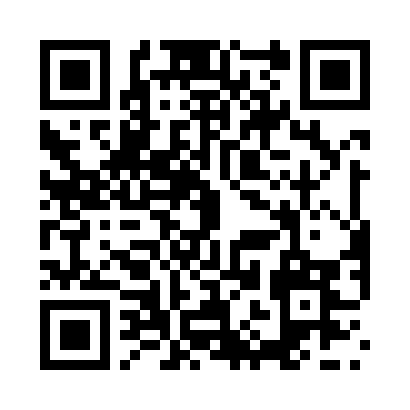

REGISTERED TEST DEVICES ONLY
GoNoGo Weather
Version 1.0.0 · Build 2 · Ad Hoc
Install on iPhone- Open this page in Safari on your registered iPhone.
- Tap Install on iPhone, then confirm Apple's installation prompt.
- Return to the Home Screen and wait for GoNoGo Weather to finish installing.
This package includes the iPhone app, iPhone widget, Watch app and Watch widget. Signing checks passed; installation and runtime still need testing on your devices.
For the Watch, check the iPhone's Watch app for GoNoGo after the phone installation. Developer Mode may be required. This link does not enable Developer Mode or guarantee Watch installation.

Scan this code with your iPhone Camera, then open the page in Safari.
Package details
This is not an App Store submission. The download is public, but the signing profiles restrict installation to registered test devices.
Download signed IPA (for manual installation)
IPA SHA-256:0a17e7ecd8d92ec081c8e24fb97a8bb2db02f71ced10ecde43adaaeca6de415e